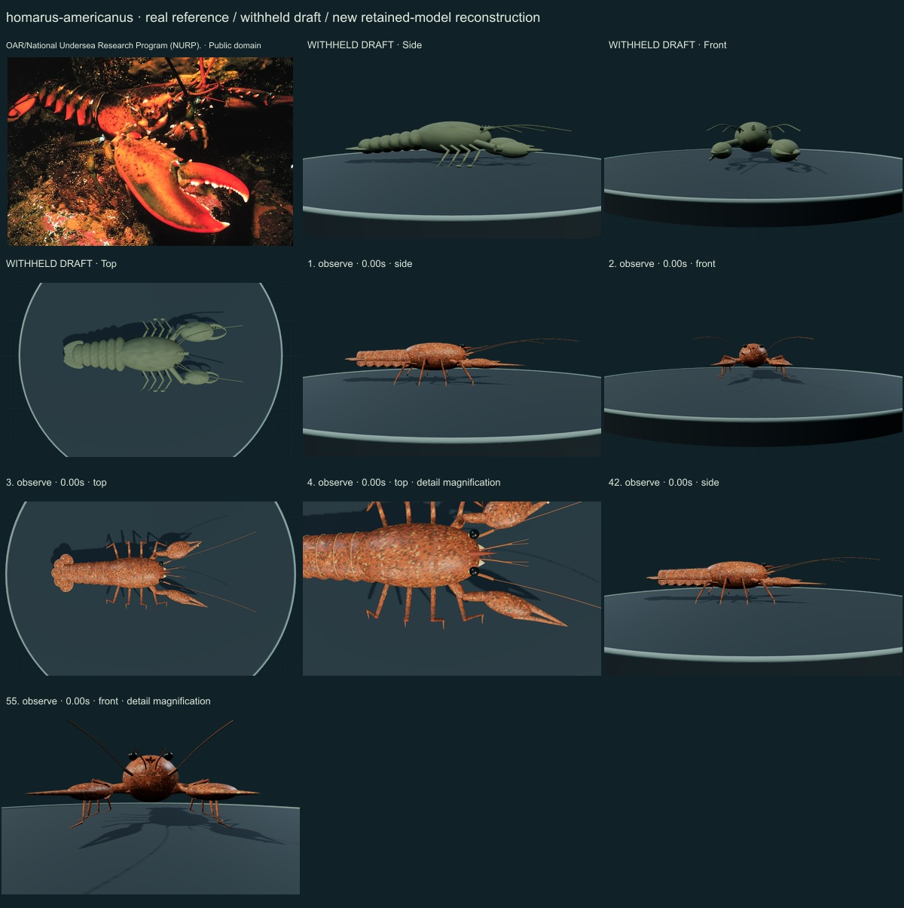
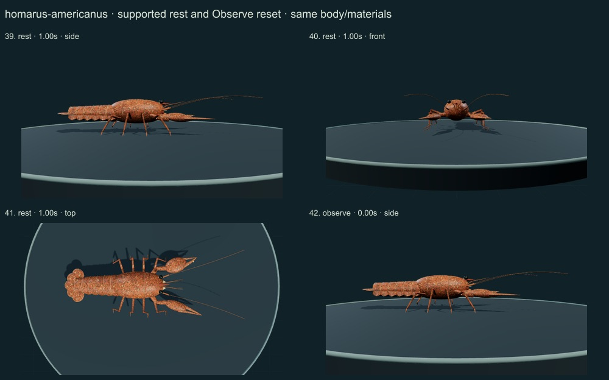
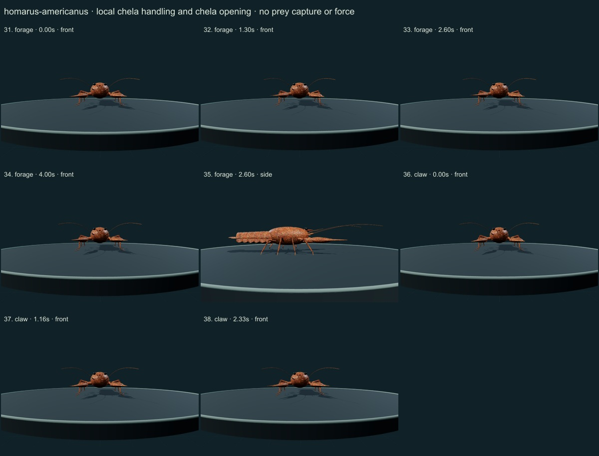
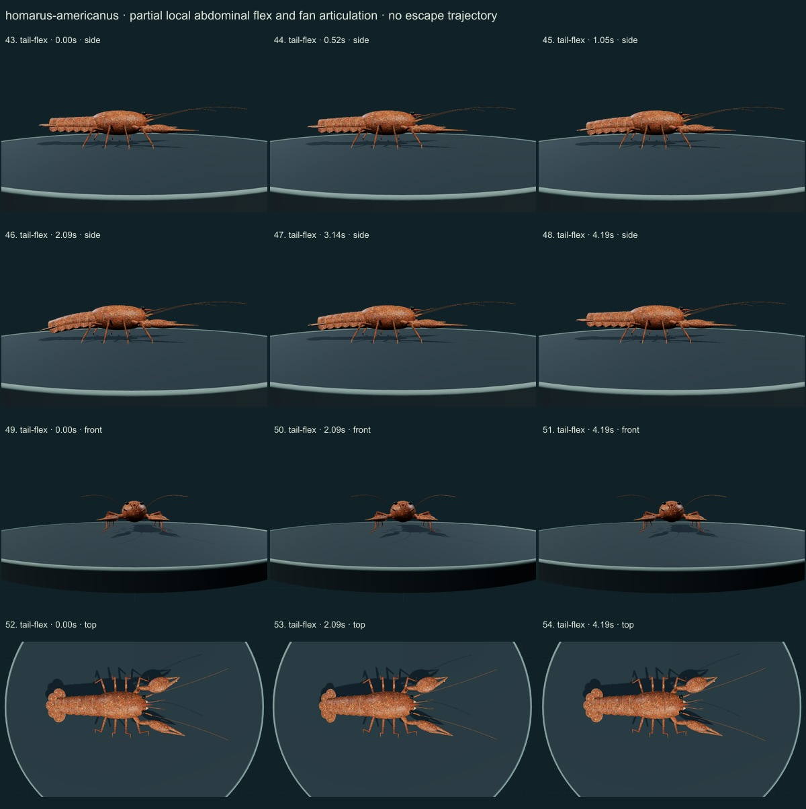
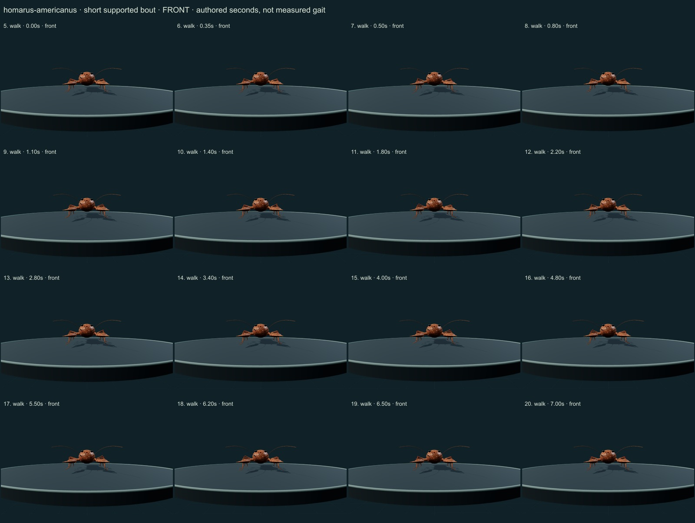
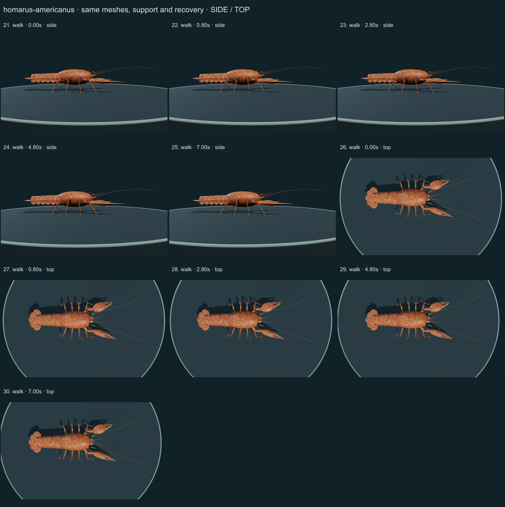

PhenoVoxel Archive · v0.6.20 · October 24, 2026
American lobster · individual initial correction
This three-species release reaches 265 after verified publication. 35 saved drafts remain withheld; 285 species remain to 550, including 250 without saved drafts. Release register. Fine anatomy and biological dynamics remain partial, unmeasured and independently unvalidated.
The authentic offshore-Maine1975 NOAA/NURP photograph and actual FAO printed57/58 figures were viewed. DFO/USGS/NOAA account context distinguishes the typical species range and variable pigmentation from the selected image. Macmillan1975 primary-paper abstract describes variable forward stepping; only qualitative context is used, not original recordings or fitted coordinates.
OAR/National Undersea Research Program (NURP). · Public domain. NOAA/NURP source labels Homarus americanus offshore Maine, November1975. The selected warm red/olive rendering follows this authentic lit photograph, not a cooked animal or all natural color variation. Sex, lighting and dimensions are not independently redetermined. Resized inside 1000 px, flattened and JPEG encoded; no generative alteration.
Exact source/license/download/local checksums remain in the data. Photograph identity and capture conditions are not independently re-established. Generated photographs are not used.
A separately proportioned robust carapace, a ventral rostral tooth, one broader crusher and a longer-fingered cutter, eight supported articulated walking limbs with small P2/P3 claws, six serial abdominal plates and a central telson with four uropod lobes replace the generic draft.
A warm red/olive selected phenotype follows the authentic lit NOAA/NURP source image. Smooth naked palms, fine varied cuticle and pale seams replace the undifferentiated tan surface; no generated photograph or measured material map is used.
Remaining: Rostral tooth variability, fine cuticular detail, setal structures, mouthparts, joint axes, claw dentition and internal physiology remain incomplete/unmeasured. The red/olive selection does not represent all natural coloration, and the photograph cannot calibrate illumination or reflectance. Sex/age are not independently redetermined; modified first pleopods are omitted.
A short authored forward support/recovery bout, retained chela and antennule gestures, finger opening, quiet support and partial local tail/fan flex. No force, fitted stride, actual escape displacement, fluid flow, muscle, heart/gill or ingestion mechanism.
No measured coordinates, natural playback rate, joint limits, forces, fluid dynamics, muscle, food contact, ingestion, sensory physiology or independent biological validation. Fixed-length/support checks establish internal software consistency only.
55 actual final nonblank side/front/top, enlarged and action/posture states inspected individually on labelled sheets against the authentic photograph and scoped sources. Superseded frames excluded. Qualitative author assessment, not independent expert certification.






No 90% accuracy score, measured biological rate, physiological simulation or independent specialist certification is asserted. Software checks are not empirical validation. The prior 262 species objects and credited wolf/tiger behavior meshes are unchanged. Original geometry/material/controller code is MIT; real reference photos retain their individual licenses. Primary-paper figures were consulted where accessible and linked, not redistributed. Modern taxonomy is retained; Protista/Monera are legacy reporting conveniences and recorded occurrences are not native-range boundaries.
Per-frame findings, source scopes and checksums · Live model